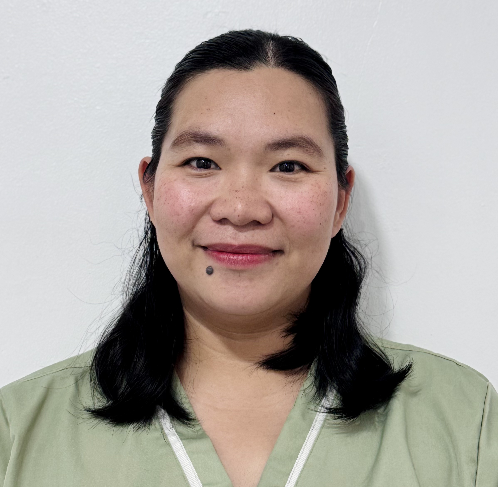

about us
Centrihealth Laboratory is a reliable and affordable secondary clinical laboratory committed to accurate and timely testing. We prioritize patient health through early detection, high-quality diagnostic services, and compliance with all regulatory standards. Our team ensures excellent patient care, cost-effective services, and continuous improvement to meet the community’s needs.
VISION, MISSION & GOALS
OUR VISION
A quality secondary clinical laboratory that is affordable, accurate and responsible for the health and prevention of illness among the people in the community through early detection and reliable reporting of laboratory findings in accordance with the standard procedures and quality technical performances.
OUR MISSION
To achieve our vision, the management and staff of Centrihealth Laboratory shall:
- Actively participate in the formulation of standards, policies and procedures for better clinical programs for clients and for continual improvement of the laboratory.
- Serve as coordinator of patient follow-up and referral to other health-related disciplines and resources for patients requiring additional needs.
- Conduct examinations and comply with the standard requirements set by the Bureau of Health Facilities and Services, Department of Health and other regulatory agencies.
- Offer reasonable and competitive costs for the benefit of patients within the community.
OUR GOALS
Centrihealth Laboratory carries out its medical testing activities meeting the requirements set by the Department of Health and other accrediting and regulatory bodies. By this, the management is committed to accomplish the following goals:
- Provide diagnostic services, giving top priority to the quality of the results for all samples received by the Laboratory.
- Ensure that adequate measures of quality care are given to all patients without discretion.
- Offer cost-effective and fine-tuned services to ensure reliable and accurate results.
- Improve services through continuous improvement, customer feedback evaluation, and proper coordination with employees.
- Ensure client requirements are met without affecting guidelines set by the accrediting body, and provide competent workers in a timely manner.
organizational chart


